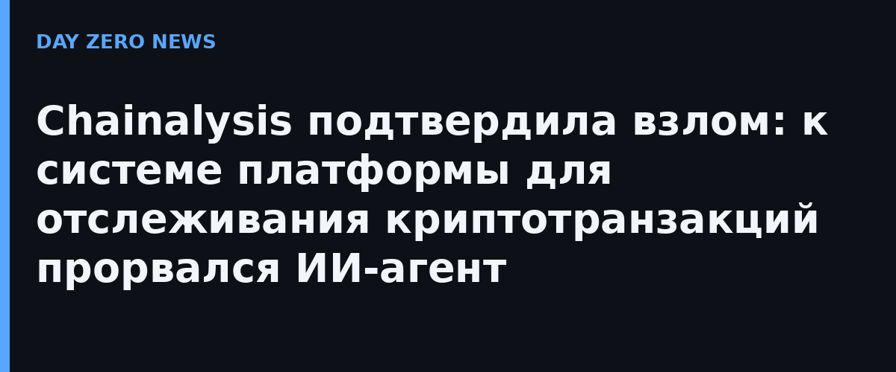

Chainalysis опубликовала официальную страницу об инциденте и полное письмо клиентам: в этом месяце компания обнаружила, что внешний атакующий получил несанкционированный доступ к системам и внутренним инструментам платформы, используя «наступательные агентные техники» — то есть ИИ-агентов, действовавших автономно. Компания прямо связывает это с общим ростом ИИ-атак в отрасли и подчёркивает: инцидент не связан с недавней кражей криптовалюты у Binance (там, по официальным данным, был скомпрометирован ноутбук DevOps-инженера).
По итогам расследования на текущий момент Chainalysis заявляет: нет признаков доступа к контенту расследований (графам, заметкам, делам), результатам транзакционных запросов, паролям в открытом виде, MFA-секретам и пользовательским токенам сессий. При этом атакующий получил часть несекретных данных клиентов: ID пользователей, полные имена, адреса электронной почты и метки ролей в организациях, зарегистрированных на платформе. Компания обещает разослать каждому заказчику детальный разбор затронутых записей.
Показательно: для ликвидации последствий Chainalysis привлекла сторонних экспертов по кибербезопасности и, по своему официальному заявлению, использует «современные большие языковые модели» для широкого ревью безопасности платформы. Иными словами, ИИ-агент атаковал — ИИ-модели обороняются. Утечки у «главного следователя блокчейна» тем болезненнее, что клиентами Chainalysis являются регуляторы, правоохранительные органы и биржи по всему миру.
Официальные рекомендации Chainalysis: ожидать всплеска неожиданной рассылки — быть предельно внимательными к нежданным запросам сброса пароля и запросам аутентификации; организациям, где ещё не включена двухфакторная аутентификация, срочно включить её (через аккаунт-менеджера Chainalysis); ждать персональной разбивки затронутых записей от компании. Это уже не первая за осень история, где ИИ-агент выступает самостоятельной атакующей силой: вспомнить хотя бы кампанию из 44 ИИ-агентов против японских организаций или кейс с личным Claude Code у подрядчика Пентагона.